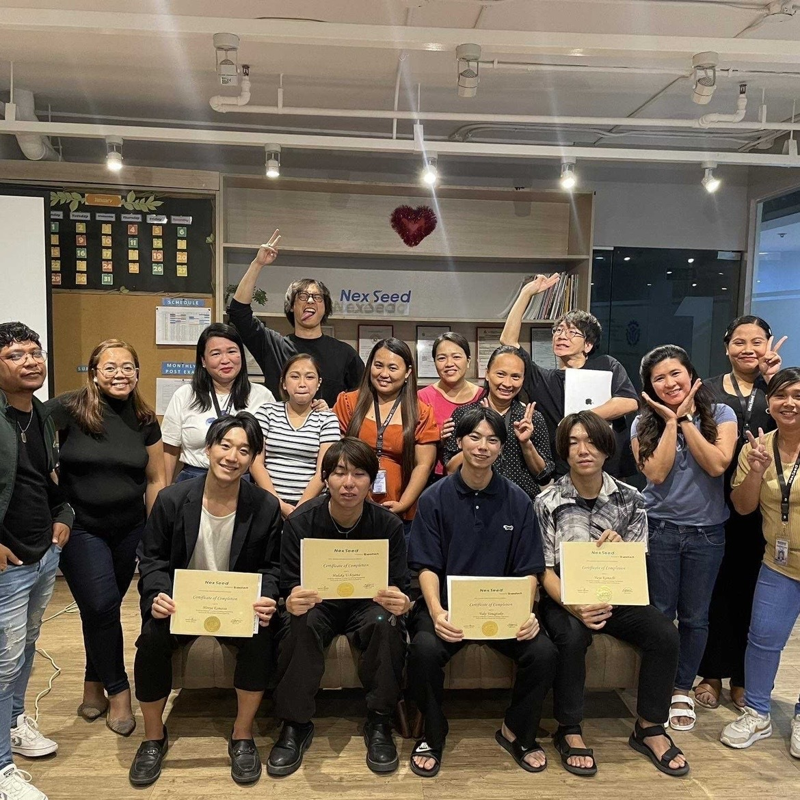

【作成背景】
IT留学でセブ島に来て1週間。
たった1週間にもかかわらず、多くのカルチャーギャップに直面した。
フィリピンのセブ島で暮らすということの難しさを痛感した。
良くも悪くも毎日が発見の連続で、知らないことだらけだった。
実際にセブ島で生活して、初めて体感する日本とのカルチャーギャップ。
セブ島に来る前に、日本から持ってきた方がよかった物、持ってこなくてもよかった物。
実際にセブ島に住んでみないと気付けない些細なことの数々。
セブ島に暮らしながらIT留学することの大変さをつくづく痛感する今日この頃である。
あらためて、「セブ島IT留学に特化した情報サイト」の必要性を感じた。
もっと具体的で耳寄り情報のある情報サイトがあれば、どんなによかったことか。
まさにこの時の思いこそが、本サイトの作成背景である。
学校の写真
寮の写真

日常の写真